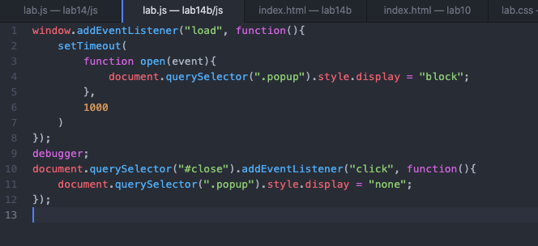

This popup window is a test for my contribution to my Team Project. Go ahead and exit out to find my lab!
For lab 14, I found myself challenged by adding a debugger into my code, as well as by working more individually. It was tough to work with my partners without having a chance to meet in person and collaborte, as it was harder to articulate any problems I ran into succinctly over discord. I was able to challenge myself further this week my learning how to create an automatic popup message on a site by myself, as it was part of my contribution to my group's Team Project.
As for actual problems with my code, I only ran into those I was easily able to fix by correcting syntax and ordering. I was pleasantly surprised with my progress in problem solving and correctly coding. The largest problem I encountered through the week was being unable to connect with the class in person.
My results can be seen upon loading this page, with the implementation of a pop-up message. I also added debugging breakpoints into this lab to test my progress, which can be seen in the screenshot below.
